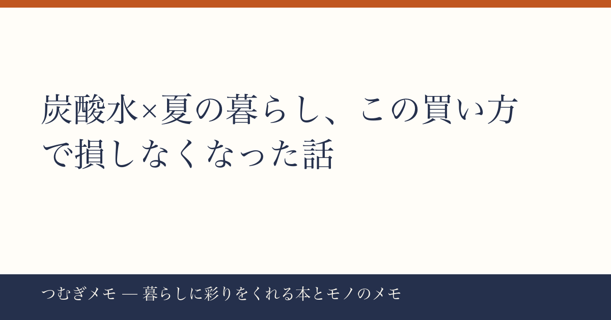

こんにちは、つむぎです。今週のXと楽天を眺めていたら、一つのものが繰り返し浮かび上がってきたので、今日はそれだけを深掘りします。
この記事でわかること： 炭酸水をお得に・賢く暮らしに取り入れるための「買い方・選び方・使い方」の全体像。
今週の要点
- 強炭酸水「OZA SODA」が楽天ランキングに今週だけで複数回登場し、合計レビュー6万件超えのバケモノ商品だと判明した
- 単に「安いから買う」だけでは箱買いの恩恵を半分しか受けていない
- 炭酸水を日常に組み込むと、飲み物以外の"ちょっとした使い道"も広がる
---
事実： 今週の楽天急上昇ランキングに、同一ブランド「OZA SODA」の強炭酸水が2エントリー入っていた。500ml×24本がレビュー51,438件・★4.69、500ml×48本（24本×2ケース）がレビュー16,623件・★4.69という数字で、どちらも4点台後半を維持している。レビュー5万件超えというのは楽天市場でもトップクラスの信頼量であり、「一時的なバズ」ではなく「定常的に選ばれ続けている商品がクーポンで再燃した」構図だと読める。
分析： 7月下旬という時期が効いている。夏休みが本格化し、家で過ごす時間が増えると、飲料の消費ペースは一気に上がる。外出時にコンビニでペットボトルを1本ずつ買っていた人が「そういえば箱買いすれば…」と気づくタイミングがまさに今週だ。加えて、健康志向の高まりで「甘くない飲み物を手元に置きたい」という需要が底上げされている。炭酸水はカロリーゼロ・無糖のまま「飲んだ満足感」を得られる数少ない選択肢なので、置き換え需要が根強い。
実践： 今週のクーポン期限は過ぎても、楽天マラソンやスーパーセールのたびに同カテゴリのクーポンは再発行される。「OZA SODA 24本」をお気に入り登録しておき、次のセール初日に即カートへ入れる習慣をつけるだけでいい。箱買いは「一度の判断」で数ヶ月の飲料コストを下げる、最も地味で確実な節約行動のひとつだ。
---
事実： 24本入りと48本入りの両方がランキングに並ぶということは、「少量試したい層」と「ガチ運用したい層」の両方が同時に動いている週だったことを示している。レビュー件数の差（51,438件 vs 16,623件）を見ると、まず24本から入ってリピートしているユーザーが多いことも想像できる。
分析： 箱買いが続かない人の多くは「置き場所問題」で脱落している。500ml×24本は段ボール1箱でおよそ12kgになる。玄関横・洗面台下・キッチン床の一角など「冷蔵庫の外に常温ストックゾーンを作り、飲む2〜3本だけ冷蔵庫に移す」という運用にすると、スペースと冷蔵庫の容量を両立できる。僕自身も段ボールのまま玄関脇に置いて、朝の支度前に2本だけ冷蔵庫に補充するルーティンにしてから、「切らしてコンビニに走る」が完全になくなった。
実践： 初回は24本で試すのがおすすめ。「1日1〜2本ペースなら24本で約2〜3週間もつ」と体感するだけで、次回から48本に躊躇なく切り替えられるようになる。まず1箱、家の中に「飲料の在庫」という概念を作るところから始めてほしい。
---
事実： 今週の楽天ランキングには夏向けの食品も複数入っており、なかでも骨取りさば（レビュー35,359件・★4.78）や骨取り銀さけ（レビュー2,781件・★4.78）が「夏休みごはん応援」として大幅値引きされていた。食材を自宅で調理する機会が増える今こそ、炭酸水の「料理への転用」を知っておくと一石二鳥になる。
分析： 炭酸水は天ぷらやフリッターの衣に使うと、炭酸のガスが衣をサクッと仕上げる効果があるとされている。また、魚を炭酸水で軽く洗うと臭みが和らぐという使い方も料理好きの間では知られている。強炭酸であることが重要で、OZA SODAのような強炭酸タイプはこの用途にも向いている。つまり「飲料として箱買いしたものが、そのまま料理の底上げにも使える」という二重の価値がある。
実践： まず試してほしいのは天ぷら衣への転用。薄力粉を冷たい強炭酸水で溶くだけで、いつもより軽い食感になる。夏休みに魚料理が増えるこの時期、箱で買った炭酸水を「料理用」「飲料用」と気軽に使い分けてみてほしい。炭酸水が「消費されるもの」から「暮らしの道具のひとつ」に変わる感覚がある。
---
Q. 強炭酸と普通の炭酸水、どちらを箱買いすべき？
A. 「飲料としても料理にも使いたい」なら強炭酸一択。炭酸が強いほど料理への転用効果が高く、飲料としても満足感が大きい。普通炭酸は刺激が苦手な人向けだが、用途の汎用性では強炭酸に軍配が上がる。今週ランクインしていたOZA SODAは「強炭酸・無糖」という条件を両方満たしている。
Q. 箱買いした炭酸水、賞味期限は大丈夫？
A. ペットボトル炭酸水の賞味期限は製造から1年前後が一般的。24本を1日1〜2本ペースで消費すれば2〜3週間でなくなるので、期限切れを心配する必要はほぼない。ただし、開封後は炭酸が抜けるため、開けたらその日中に飲み切ることを意識したい。
Q. 送料無料と書いてあるが、一部地域除くとは？
A. 沖縄・離島など配送コストの高い地域が対象になることが多い。商品ページの「送料無料の条件」をカート投入前に必ず確認するのが確実。該当地域の場合は近隣のドラッグストアや業務スーパーでの箱買いも選択肢になる。
---
「炭酸水を箱で買う」という話は、一見すると地味すぎて記事にするほどでもない、と思うかもしれない。でも今週、楽天ランキングにレビュー5万件超えの商品が複数のエントリーで並ぶのを見て、これはもう「暮らしのインフラ」の話だと確信した。家の中に飲料の在庫を持つこと、料理にも転用できることを知っておくこと。そういう小さな知識の積み重ねが、毎日の生活を少しだけ楽にする。
なお、このブログ「つむぎメモ」はAIとの共同作業を取り入れながら運営している実験的なメディアです。内容の方向性や事実確認は僕が責任を持って行いつつ、文章の構成補助にAIを活用しています。新しいメディアの形を試しながら、「読んでよかった」と思ってもらえる記事を届けていきたいと思っています。
また来週。—つむぎ (X: @tsumugi_memo15)
📚 目次へ